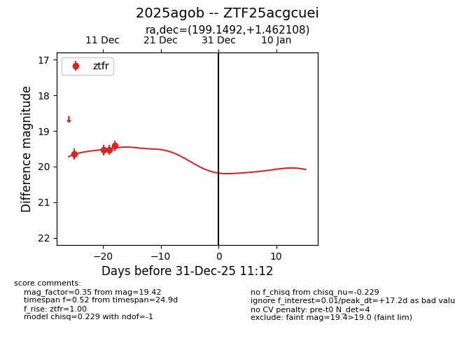
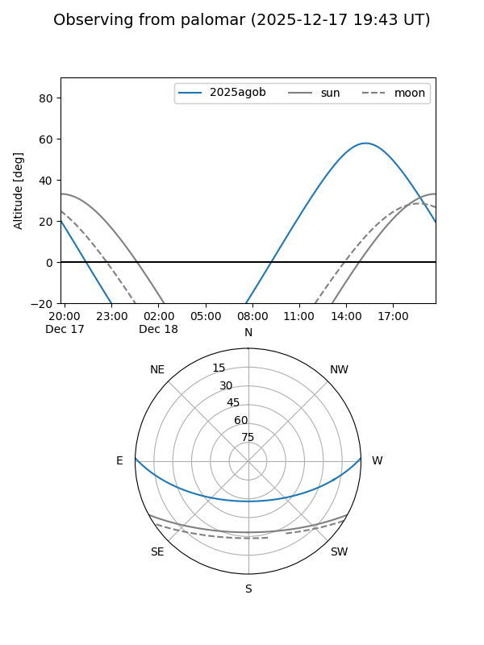
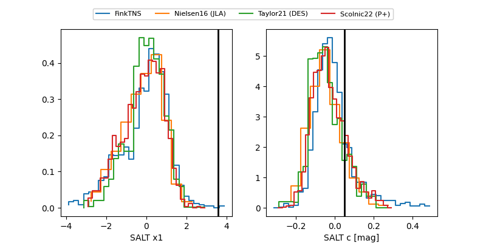

2025agob
Target 2025agob at 2025-12-31 18:00
Aliases and brokers:
FINK: link
Lasair: link
ALeRCE: link
TNS: link
YSE: link
alt names
ZTF25acgcuei (ztf,fink_ztf)
2025agob (tns,yse)
Coordinates:
equatorial (ra, dec) = 199.1492,+1.46211
equatorial (HMS+DMS) = 13:16:35.81,+01:27:43.59
galactic (l, b) = (317.2091,+63.63429)
Flags:
Photometry:
last ztfr=19.42
4 ztfr detections
Lightcurve

Visibility


Additional plots
